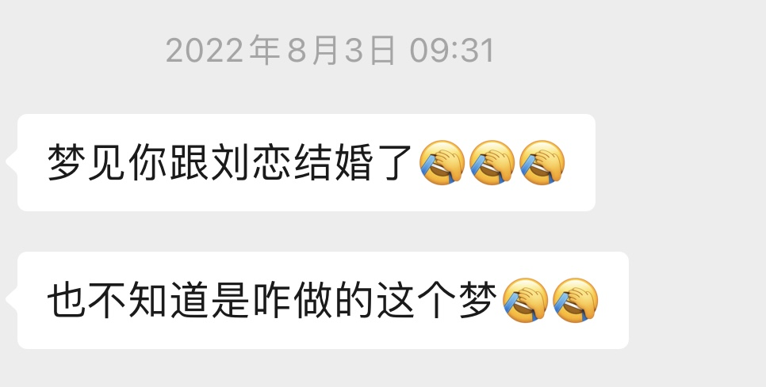

我在想一个问题，是不是每个男生心中都有自己的女神？比如刘亦菲、林志玲、新结恒衣，我的女神有点特殊。
初中时和我一个班的有个L姓女生，因为长得好看性格又好非常受欢迎，那个时候她有非常多的追求者。她和班里一个当时身高已经超过一米九的韩国籍男生交往过（我当时上的是一个国际学校，有很多韩国交换生），和体育委员交往过，还和其他班的男生交往过，这几个仅是我知道的，不知道的可能更多。
我和她是同一个县的，每周五会一起坐大巴车回老家，我也鼓起过勇气约她来我家一起写暑假作业，那时候真的只是写作业而已。我知道自己几斤几两，也听到过她在私下里对我的评价，知道自己不可能，而且看到她身边整天有那么多人围绕，很是羡慕，甚至有些自卑，所以不敢有任何逾矩的想法。
好巧不巧，我们两个高中又去了一个学校，但这次没有在一个班里。她凭借着自己的优势又成了学校里的小红人，我们班也有好几个仰慕者。其中有一个W姓的男生看她戴了红框眼镜，在还不知道她名字的情况下就用了小红这个昵称来称呼她，当这个W姓的男生知道我和她是老乡后羡慕不已，整天问我很多问题，比如：你说小红有男朋友了吗？小红喜欢什么样的男生？我作为他的可靠线人乐此不疲的和他一起探讨。
高中时她偶尔遇到糟心事的时候会和我这个不可能的备胎倾诉，可能因为我那时候没什么经历，也不能给她出什么好建议，给她出主意的人很多，能静静听她讲的没几个，她就把我当成了一个特别好的倾诉对象。
高考时她通过艺考去了湖南的一所大学，我留在了河北，她的大学生活非常丰富，我就通过她的朋友圈又看了她四年，我也会有一搭没一搭的在微信问候一下她。那时候流行微博，我还在微博上偷偷关注了她。她和我说她想用Instagram，我就指导她一步步进行科学上网的配置，后来也顺理成章关注了她的Instagram账号，她Ins上的很多照片是没有发在朋友圈和微博的，我就觉得自己发现了她的秘密基地，有些窃喜。
一转眼又4年过去了，大学毕业前我在石家庄实习，本来是打算留在石家庄了，可看同学们都来了北京有些心痒痒。毕业第二天给公司领导提了离职，同一天收到了北京的一个面试通知，我在公司楼道里和对方聊了几句，对方问了我一些问题就给我发了offer，如果是现在这么卷的环境我肯定连一个offer也拿不到。
等我到北京开始上班后，看到L回石家庄了，准备在石家庄创业之类的，而且看起来是单身状态。我有些后悔来北京，幻想如果没有来我是不是也许会有什么机会？但既然已经来了就好好在北京发展吧，我们继续有一搭没一搭偶尔互相发个消息。
又过了半年她可能在石家庄不太顺利，也来了北京，在北京找了份工作，没多久在北京认识了新的男朋友，又没多久和男朋友吵架对方把他赶出去，她当时不敢和家里说，也没钱在外边住，就找我借了几千块钱，我毫不犹豫借给了她，这笔钱过了好久才还回来。
我刚来北京不久有段创业经历，是做一个类似探探的产品，我邀请她来我们APP注册发照片。每天通过后台数据看到她被很多人点赞我内心里替她高兴。
再后来我结婚了，作为同学、老乡的身份会继续每隔几个月问问她怎么样，不知道是不是巧合，有好几次我问她的时候都碰巧她遇上困难，和我聊聊她的遭遇。
实际上我们从高中毕业后就再也没见过面，之后的所有交流都是在微信上，她有时也会突然来找，甚至还和我说她梦到了我。

现在她的生活依然丰富多彩，全国各处旅游打卡吃美食，而且是个滑雪手、摩托车手。工作也是换了一份又一份，很早之前我问时是在做婚礼策划，过一段时间再问时准备开个精酿小酒馆，她就像一个神，让人捉摸不定，我是泯然众生中的一个守望者。
2021年她在朋友圈晒了结婚证，巧的是那个男生也姓贾。去年他们举办了婚礼，她穿婚纱真好看。